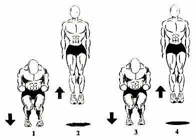
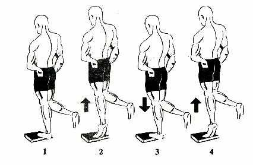
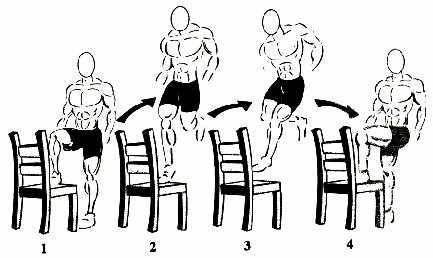
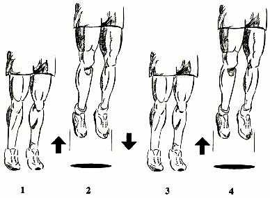
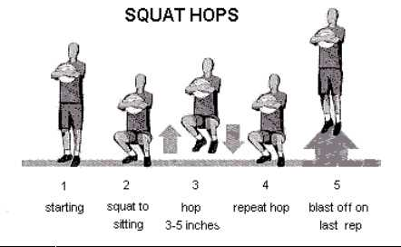

Les Leap Ups
Tenez vous debout les pieds largeur des épaules.

Sautez en regardant devant vous. Redescendez à plus ou moins ¼ de votre corps (vos jambes doivent êtres pliées à environ 45°) et ressautez. Ceci termine un Leapups.
Les Calf Raises
Tenez vous debout sur quelque chose de façon a ce que vos talons ne touche pas le sol (escalier, livre,…).

Soulevez vous avec la pointe de vos pieds puis redescendez lentement. Faites une jambe puis l’autre.
Les Step Ups
Prenez une chaise et posez un pied dessus, sautez avec cette jambe et lorsque vous êtes en l’air
changer de jambe : mettez votre jambe qui était sur le sol sur la chaise et celle sur la chaîse sur le sol.

Faites le nombre de Reps indiqué pour chaque jambe.
Les Thrust Ups
Tenez vous debout avec vos pieds largeur des épaules, et ne pliez plus les genoux

Sautez toujours sans pliez vos genoux
Les Burnouts
Tenez-vous debout (comme le Thrust-Ups).
Puis se mettre sur la pointe des pieds (le plus haut possible).
Ensuite, sautez le plus haut possible en utilisant seulement le bout de vos pieds.
Le squat Hops
Le hops aide considérablement à améliorer la résistance cardiovasculaire, le sprint et la vitesse du premier pas.
Le hops est très éprouvant comme exercice et, pour cette raison, nous avons conçu l'exercice à accomplir seulement 1
jour par semaine.
Durant les semaines d’Air Alert III,
vous devez seulement accomplir le hops le mercredi et aucun autre jour. Si vous décidez de faire l'exercice plus de 1
fois par semaine, vous risquerez une extrême fatigue du muscle et le rétablissement du muscle sera faible sans parler
du risque de blessure. Le faible rétablissement du muscle vous mènera à moins de gains de cm.
Pour l'équilibre, vous aurez besoin d'un ballon de basket-ball que vous tiendrez dans vos bras.
Pendant l'exercice, tenez le ballon contre votre torse et regardez droit devant.
Le hops est un exercice très simple à accomplir.
Pour commencer l'exercice,
accroupissez-vous simplement vers le bas dans une position reposante avec vos
jambes pliées à un angle de 90 degrés. Vos cuisses doivent être parallèles au sol.
Vous serez dans une position reposante. Assurez-vous que votre dos est complètement
droit et que vous vous soutenez sur les pointes de vos pieds.
Pour exécuter l'exercice, maintenez la position reposante tout en saisissant la boule.
Regard droit devant et exécuter un petit bon (appeler hop/bounce) de 3-5 pouces.
Vos cuisses ne DOIVENT jamais quitter leur position parallèle. Un hop/bounce est considéré comme une répétition.

A l'accomplissement (à la toute dernière répétition) de chaque ensemble,
vous devez exploser dans l'air telle une fusée aussi haut que vous pouvez.
Vous n’irez pas très haut mais se sera très efficace.
L’explosion est extrêmement importante. Vous verrez que vos cuisses
seront légèrement plus dures et vous donnera 1-2 pouces additionnels.
1 : Pour l'équilibre, tenir un ballon de basket ou de volley-ball au niveau de la poitrine
2 : Accroupissez vous dans une position assise tout en tenant le ballon, assurez vous que vous regardez droit devant,
que vous avez le dos droit et que vous êtes sur la pointe des pieds.
Enfin le plus important assurez vous que vos cuisses soient bien parallèles au sol
3 : Sautez en position assise de 3 à 5 pouces ( 7 à 13 cm) en gardant bien
vos cuisses parallèles, les pieds à terre termine la repétition.
4 : Aprés chaque répétition vous retournez en position original (assise),
et vous recommencer.
5 : A la dernière reps, sautez le plus haut que vous pouvez (par exemple si vous devez faire 15 reps,
vous effectuez 14 squat hops et sur la 15ème vous sautez le plus haut que vous pouvez).